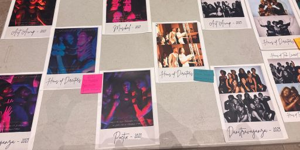

Festival of Eccentrics 2026: Born Naked
The dramaturgical process of a Spriggs-Burroughs Drama and Dance Ensemble production
2026 • Spriggs Burroughs Drama and Dance Ensemble • Spelman College • Performing Arts Dramaturgy
Overview
Spriggs Burroughs Drama and Dance Ensemble is a student-lead performing arts ensemble comprised of undergraduate students within the Atlanta University Center (Spelman College, Morehouse College, Clark Atlanta University, and Morris Brown College). Festival of Eccentrics (FOE) is Spriggs-Burroughs Drama and Dance Ensemble’s annual fall show. The show is not a ball, rather a competition style production with elements of queer house balls. FOE 2026 is the 6th production, and the first to be performed in a theater instead of a classroom, and the first to not include any orignal cast members in it's cast and crew.
Research Questions
- What conditions within the United States created the need for a ballroom community to emerge?
- How has the full name of Spriggs-Burroughs evolved since it’s conception? What was it named before 2000?
- What conditions within the Atlanta University Center created the need for a show themed around ballroom culture?
Creative Innovation
The goals of this project are as follows:
- To educate FOE 26's cast and crew members on the history of ballroom to ensure the production honors it.
- To document the transition of FOE 26 from it's original classroom hoom (Giles Building, Room 106, Spelman College) to it's new home (The Black Box Theater, Center for Innovation & The Arts, Spelman College).
- To create a pre-show experience for show attendees that honors the legacy of the first 5 productions.
- To curate a donation for the Spelman College Archives that ensures the history of the production and organization cannot be erased.
Technical Execution
Research Methods
- Interview with Founding Director.
- Archival visit to the Spelman College Archives.
- Review of newspapers, articles, books, and images.
- Digital Archive search (YouTube, LinkedIn, Facebook, Instagram, etc.).
Materials developed
Intro to Ballroom Presentation
Previous Director Quotes
Program with Catagory Explainers and Director Histories.
Photo display of previous Cast and Crew members.
